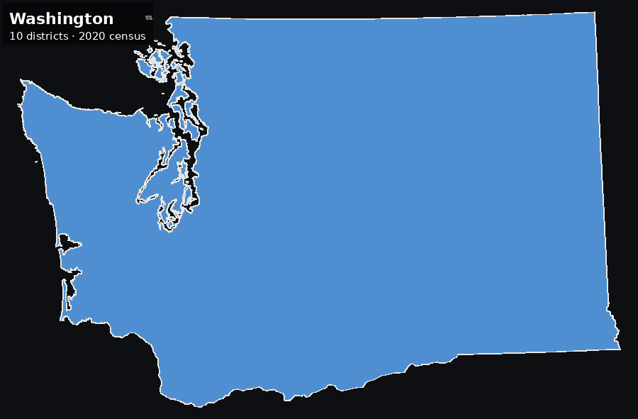
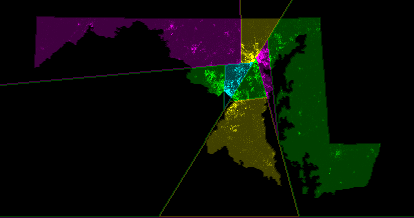
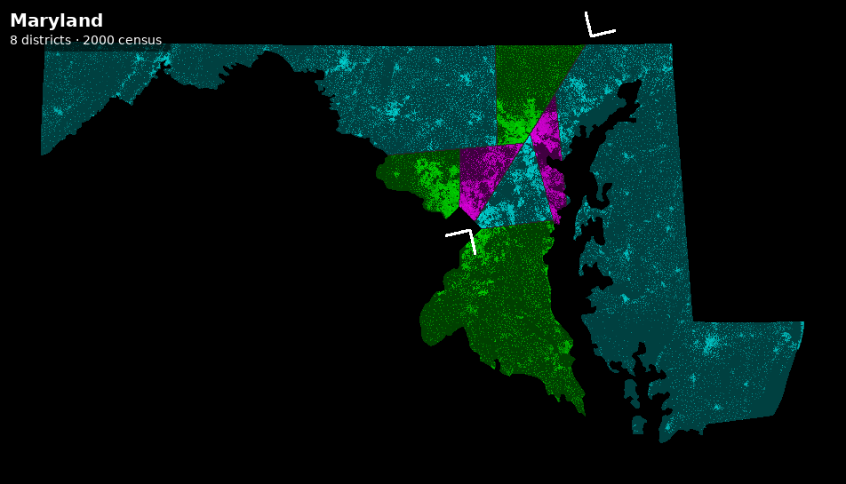

Counterfactual legislatures
What if the districts were drawn by an algorithm that knows nothing about politics?
US congressional districts are drawn by state legislatures — the people who then run in them. The shortest splitline method removes every human decision: cut the state in two with the shortest straight line that leaves the right number of people on each side, then recurse. No communities of interest, no incumbents, no voting history. Just population and geometry.
These maps are rebuilt from the 2000, 2010 and 2020 censuses — about 8 million census blocks per run. Brightness is population density, so the cities show up as the bright speckle.
The contiguous United States, 432 districts

One cut at a time
Every map is a binary tree of straight lines, so the whole thing can be replayed:


Does it reproduce the original?
The Center for Range Voting published splitline maps from the 2000 census in 2009. Rebuilding them from scratch is the test of whether any of this is right: same census, same seat count, same algorithm, independently written code.


86% of Maryland's land area falls in the same district in both — and that is roughly as close as this can get. The algorithm is chaotic: each cut decides which blocks the next cut even sees, so a disagreement of a few hundred metres near the root, from a slightly different coastline file or a different rounding of a population, propagates through everything below it. Simple states do better — Colorado, landlocked and nearly rectangular, reaches 97% — but Maryland is the more honest illustration of what "reproduced" means here.
Where the two differ, there is reason to think these lines are the more exact. The 2007 program rasterised: it binned population into pixels roughly a kilometre across and searched for cuts on that grid, so a pixel holding thousands of city residents could never be split. This version searches the census blocks themselves. Ported and run side by side on identical inputs, the raster approach leaves a 0.020% population spread across four districts where the block-based one is exact. Maryland above is within 0.37%, and within 0.02% under the finer population model used for the other maps on this page.
A few states


What this is for
Not a proposal. Splitline districts ignore everything people reasonably care about, and multi-member proportional representation is almost certainly a better answer. The point is that a politically blind map is a measuring stick: the distance between it and the enacted map is a floor on how much the real map was shaped by something other than geography.
That question got sharper in April 2026, when the Supreme Court held in Louisiana v. Callais that a state may draw districts for any political purpose regardless of racial effect. The defence is now "our intent was partisan, not racial" — and a map drawn with no political input at all is the natural thing to measure it against.
The longer aim is to do similar exercises for several countries and electoral systems, and then ask whether legislatures elected under different rules would have voted differently on policies whose effects we can actually measure.